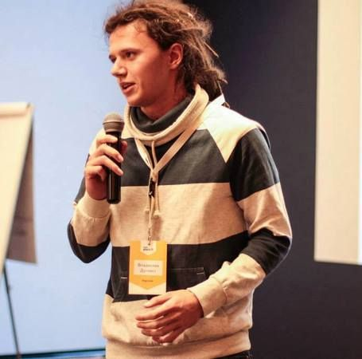

Доклады
-
Дугнист Владислав MLWorks , iOS Developer
Разработка iOS приложений с MVVM
MVVM позволяет разгрузить Massive View Controller, а в паре с IoC покрыть бизнес логику unit-тестами и избавиться от неприятных сюрпризов после запуска.
- Сравним MVC, MVP и MVVM.
- Что использовать для binding'а, DI и тестирования?
- TDD. Можно ли покрыть приложение тестами, не сдвигая дату релиза? -
Семенов Сергей, Неверов Андрей Trucker Path , Team lead/Product Owner, Руководитель разработки
Без комьюнити – *опа
- Early adopters и как жить после них.
- Где брать пользователей и что с ними делать.
- Не конверсией единой.
- Бизнес-фичи в не-бизнес приложениях.
- Конкуренты и инерция.
- Поговори с пользователем, %username%.
- Кнопки побольше мне запили!
- Приходишь на рынок – разберись. -
 Сычев Александр RAMBLER&Co , Инженер-разработчик iOS
Сычев Александр RAMBLER&Co , Инженер-разработчик iOSКак не выстрелить себе в ногу из конечного автомата
В своем докладе я расскажу, как, используя в iOS-приложении конечный автомат, решить задачу управления сложным объектом со множеством внутренних состояний (контроллер нагруженного экрана, сервис получения данных из разных источников и т.д.) и как при этом не потеряться во множестве переходов.
-
 Семенихина Варвара ex Zvooq , ex Head of Performance Marketing
Семенихина Варвара ex Zvooq , ex Head of Performance MarketingПродвижение мобильных приложений. Как всегда попасть и не пропасть в ТОПе?
1) Математика привлечения: как посчитать, сколько должна стоить установка.
2) Аналитика: что надо сделать, прежде чем начать привлекать пользователей?
3) Выбираем каналы и стратегию привлечения пользователей. -
 Шлыгин Александр Unity Technologies , Senior Solution Consultant, EMEA
Шлыгин Александр Unity Technologies , Senior Solution Consultant, EMEAUnity: больше, чем инструмент для разработки игр
- Unity сегодня: экосистема, кросс-платформенность, роудмап
- Сервисы для разработчиков: примеры использования
- Основы разработки на Unity -
Ильин Алексей ВГТРК , Руководитель проект Интерактивный Мульт
Интерактивные продукты для детей
- Текущее состояние рынка детских мобильных продуктов.
- Отношение к интерактивным продуктам для детей. Есть ли перспективы у ниши?
- Взаимодействие с родителями и детьми – война на 2 фронта.
Доклад построен на основе данных исследования "Игры и приложения для детей. Аудитория 2-12 лет" (март 2016). -
Петерсон Дмитрий, Флоринский Алексей SimbirSoft , Заместитель директора, руководитель отдела мобильных разработок
Как попасть в яблочко при оценке мобильных приложений
Оценили на 3 месяца, сделали за 9. Посвящается тем, у кого при фразе «нужно оценить приложение» начинает дергаться глаз. Как полюбить оценку и увеличить вероятность попадания в сроки. В докладе будут рассмотрены различные методики оценки проектов. Поговорим о том:
-как правильно оценивать
-какие проблемы могут возникать
-каких ошибок стоит избегать и как их можно исправить
-дадим оценку разным подходам и на примере кейсов компании СимбирСофт. -
Кухарев Илья Aviasales , ASO manager
ASO-оптимизация и продвижение приложений в Aviasales
— Как увеличить видимость приложения и не оказаться на дне поисковой выдачи.
— Локализация и выход на новые рынки.
— Повышение показателя конверсии из просмотра в установку и уменьшение CPI рекламных кампаний.
— Успешные кейсы и неудачи в Aviasales. -
 Нечаев Андрей Mobirate , Chief Marketing Officer
Нечаев Андрей Mobirate , Chief Marketing OfficerАналитические сервисы для мобильных игр: зачем, какие, сколько
Вы сделали классную игру и решили выпустить ее самостоятельно? Время идет, но игра не окупается непонятно почему? В итоге вы плохо спите, мало едите и много пьете? Выход есть: аналитика поможет вернуть вам в жизнь былую гармонию!
На примере игры «RoverCraft Racing» от Mobirate Studios мы рассмотрим какие аналитические сервисы существуют на данный момент (AppAnnie, AppsFlyer, Helpshift, Facebook Analytics, Flurry и др.), чем они отличаются друг от друга и разберемся почему одного сервиса недостаточно для полного погружения в проект. В этом докладе мы также коснемся вопроса почему нельзя обойтись лишь бесплатными сервисами и поговорим как запилить свою in-house аналитику.
Игра «RoverCraft Racing» была выпущена на App Store в октябре 2014 г., — разработка заняла 8 месяцев, проект окупился в течение первых 3 месяцев. На данный момент проект имеет более 2М загрузок, среднее DAU в 60K пользователей и общий рейтинг в 4,5 звезды. -
 Miheyenko Maxim FOX3D Entertainment , Producer
Miheyenko Maxim FOX3D Entertainment , ProducerMobile VR: Intro & Мэйкинг-оф проекта «House of Languages»
«House of Languages» — необычный проект, созданный для изучения иностранных языков в игровой форме на базе VR-технологий. Проект зародился как идея для конкурса «Oculus VR Jam 2015», став его бронзовым призером и получив звание «Must Have» from Oculus приложением по мнению жюри. На данный момент проект имеет более 15 тысяч скачиваний, общее число которых увеличивается с каждым днем.
- Погружение в мобильную виртуальность глазами разработчика.
- Отличие разработки ПО для PC и VR-устройств. Обзор платформ.
- Обзор и демонстрация успешных VR-проектов на платформе Gear VR от Samsung.
- Мобильная виртуальность — the Next Big Thing: как запрыгнуть на VR-поезд прямо сейчас. -
Кумыков Эдуард Elephant Games , Game Designer
История разработки игры «Sir Match-a-Lot»
«Sir Match-a-Lot» — match-3 адвенчура, созданная «Elephant Games» и выпущенная известным игровым паблишером «Big Fish Games». В своем докладе я расскажу как мы создавали игру, поделюсь фичами и инсайтами.
— Сеттинг: как мы выбирали сеттинг и почему он получился именно таким.
— Арт: о создании персонажей, локаций и других графических составляющих.
— Метагейм: описание игрового цикла, который присутствует в нашей игре помимо match-3.
— Нарративный дизайн: поддержание одной истории на протяжении всей игры.
— Балансировка уровней: самое главное при создании игр жанра match-3.
— Поддержка игры: дальнейшая работа над игрой, поддержка и выпуск обновлений. -
Василистова Екатерина Gamanoid , PR-директор
Игровая индустрия: особенности, тенденции и тренды
Игровая индустрия развивается бешенными темпами, вовлекая в себя с каждым годом все больше людей и компаний. В своем докладе я обобщу для слушателей тенденции и тренды игровой аудитории, не обойдя вниманием VR, онлайн-трансляции и киберспорт, чтобы у вас было понимание куда развивать свои проекты и на что обратить внимание в этом году.
Работая PR-директором в крупном игровом СМИ, я также хочу поделиться опытом как правильно рассказывать о своей игре не только моим коллегам, но и игровому сообществу. «Как развить свое игровое сообщество? Каковы особенности работы комьюнити-менеджера? Какие типичные ошибки совершают разработчики при общении с журналистами?» — эти и многие другие вопросы мы рассмотрим на моем докладе, открывающем секцию развлечений. -
 Липнягова Карина Drum Pads 24 , CTO, Co-founder
Липнягова Карина Drum Pads 24 , CTO, Co-founderПрокачиваем мобильное приложение с помощью deep links
1. Поддержка deep links - бонус-фича или обязательная функция мобильного приложения?
2. Как сделать поиск по контенту приложения вне приложения?
3. Twitter Cards, App Links, Google Indexing, Universal Links, Spotlight Search, Branch Metrics - разберемся, как это применить для своего приложения.Поговорим о deep links, способах их использования в приложении, удобстве приложения для пользователей и нашем опыте.
-
 Колесникова Екатерина TRINITY Digital , iOS-разработчик
Колесникова Екатерина TRINITY Digital , iOS-разработчикРазработка iOS приложений с VIPER
VIPER - это подход к архитектуре мобильных приложений, делящий логику приложения на несколько составляющих с едиными ответственностями. Основными частыми VIPER-модуля являются View, Interactor, Presenter, Entity, и Router.
- Структура VIPER.
- Основные достоинства и недостатки VIPER.
- Переходы между VIPER-модулями. -
Якубов Алишер 2reallife , Executive Producer
Жизнь после релиза: управление игровыми f2p-проектами по метрикам
Разработчики боятся выпускать проекты недоделанными, затягивая разработку из-за собственных страхов, — в итоге они выдыхаются или у них заканчивается бюджет задолго до выпуска. После релиза они ожидают, что сразу увидят возврат инвестиций, но в реальности оказывается, что денег нет и что надо было выпускать проект намного раньше, чтобы иметь возможность опираться и делать выводы на живых данных, а не на собственных галюцинациях.
Мы рассмотрим базовые метрики, помогающие управлять проектами «по-зрячему» – ARPU, ARPPU, конверсия в первую и вторую покупки, а также Retention Day 1, 7, 14 и 30, – их прямое влияние на доходы и средние по рынку цифры, на которые можно опираться при оперировании игровыми проектами.
-
Доронина Ольга Fox3D Entertainment , Project Manager
Mobile VR: Мэйкинг-оф проекта «VirtPaint»
«VirtPaint» VR — уникальный проект, позволяющий рисовать без помощи рук.
Тезисы:
— Давайте поговорим о виртуальной реальности.
— Как создавалось приложение «VirtPaint»: от концепции до реализации.
— Основная идея, цель и возможности приложения.
— Простота, инновации, юзабилити.
— Грабли, на которые мы наступили.Немного фактов:
— Команда разработчиков получила приглашение о сотрудничестве от организации SpecialEffect UK, работающей с людьми с ограниченными возможностями.
— Приложение участвовало в конкурсах «VR Jam 2015», «AT&T NYU Connect Ability Challenge»
— VirtPaint вошел в топ - 40 лучших приложений, из 350 участвующих в конкурсе и попал в выборку «7 interesting and unusual Mobile Jam VR entries for the GearVR 2015». -
 Кочакова Маша Royal Troupe , CEO
Кочакова Маша Royal Troupe , CEOСамиздат игры: окупился ли «Message Quest»?
В октябре 2015 года в Steam — основной цифровой магазин компьютерных игр — вышла игра «Message Quest», весной 2016 состоялся релиз игры на мобильных платформах. Это первая игра небольшой студии Royal Troupe, которая разрабатывалась «за свой счет» и вышла без издательской поддержки. Время подвести итоги. Есть ли жизнь после релиза? Есть ли надежда для независимых команд? Можно ли жить на доходы с игры?
-
Кварацхелия Александр Онлайн бухгалтерия "Небо" , Архитектор
Боты в Telegram: технология и её применение
Летом 2015 г. в набирающем популярность месенджере «Telegram» появилась возможность создания ботов, которые могут выполнять широкий спектр задач, автоматически обрабатывая и отправляя сообщения. Уже сейчас мы можем переводить тексты, искать авиабилеты, удаленно смотреть за счетчиками воды и света, а также просить ботов напоминать нам о важных событиях.
Во время доклада мы рассмотрим технологию создания, развертывания и функционирования ботов на нескольких показательных примерах. Мы будем использовать python + django на сервере и попробуем создать боты для решения некоторых математических задач, а также для аутентификации пользователей в системе. Доклад будет полезен тем, кто задумывается о клиентоориентированности.
-
Чебулаев Олег Perpetuum Mobile Lab , Технический директор
Мобильная база данных Realm. Прошло ли время SQLite?
- Что такое Realm?
- Сравнение произодительности мобильных баз данных
- Как работает Realm и почему его стоит использовать
- Опыт создания продуктов с его использованиемПри разработке мобильных приложений неизбежно возникает вопрос о том, как и где хранить данные. Tрадиционно выбор происходит между SQLite, Core Data либо хранением сериализованных данных в файлах. Но на сегодняшний это не все, что есть на рынке технологий. Realm — стартап, разработавший базу данных для хранения и доставки данных на мобильные устройствах, набирающий популярность среди разработчиков и получивший $20 миллионов инвестиций в середине прошлого года. Realm установлена на более чем на 100 миллионах устройств и используется такими компаниями как BuzzFeed, Expensify, Groupon, Intuit и Rite Aid. В своем докладе я подробнее расскажу про Realm — самую удобную и очень быструю базу данных.
-
 Горелкина Мария Microsoft , Технологический евангелист
Горелкина Мария Microsoft , Технологический евангелистDevOps и разработка мобильных приложений
Разработка мобильных приложений в парадигме DevOps и возможности технологического стека Microsoft. От управления исходным кодом, до автоматического предоставления новой сборки на следующий этап.
-
 Шигабетдинов Марат ITECH , директор по маркетингу ITECH.mobile
Шигабетдинов Марат ITECH , директор по маркетингу ITECH.mobileWizl: сложные триггерные коммуникации и Telegram-бот для возвращения пользователей в приложение и увеличения числа покупок
1. Триггерные взаимодействия. Выбор стратегии, основные отличия moblie от web.
2. Мобильная аналитика: проблемы, с которыми можно столкнуться при выстраивании системы триггеров.
3. Выбор источников трафика. Персонализация сообщений в медийной рекламе, социальных сетях, push-уведомлениях и email-рассылках, основанная на триггерах. Успешные кейсы.
4. Telegram-бот – модная фича или действительно полезный помощник.
Wizl — мобильное приложение, персональный помощник по подбору подарков, который не раз был зафичерен на App Store и обрел свою нишу преданных пользователей. -
Вотчицев Павел FunCorp , Product Manager
Аналитика в популярном мобильном приложении: Google Analytics VS Flurry VS AppsFlyer VS Яндекс.Метрика (мучительный выбор между шизофренией и паранойей).
Вы продумываете метрики, чтобы измерить качество работы вашего продукта.
Вы внедрили аналитику GA, собираете все больше информации о поведении пользователей.. улучшаете приложение.. и одновременно вы вынуждены уменьшать размер выборки пользователей каждый месяц (95%..80%..50%..?%) чтобы уложиться в лимиты GA.
Вы внедрили аналитику Flurry, собираете больше информации о поведении пользователей.. улучшаете приложение.. и каждый месяц вынуждены отказывать от старых типов событий, чтобы добавить новые.
Я расскажу о нашем опыте выбора инструментов и развитии системы мобильной аналитики на примере нашего мобильного приложения iFunny (3.5M DAU).